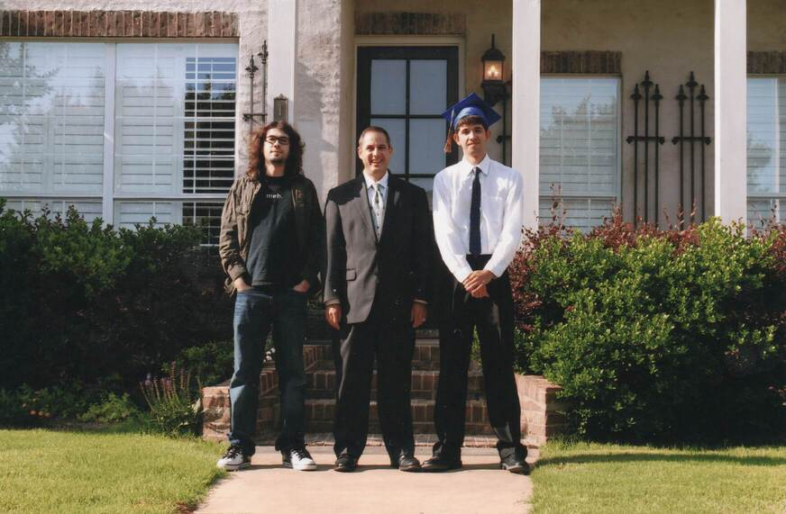

Biographical Timeline
1944
Aurea Esther Fleitas is born in Barceloneta, Puerto Rico, United States.
1964
Israel Fleitas and Aurea Velez are married in Chicago, IL.
1967
Victor Israel Fleitas is born at West Suburban Hospital in Oak Park, IL.
1971
My family moved from Chicago, IL to Miami, FL.
1985
I graduated from Southwest Miami Senior High School in Miami, FL.
1985
Raven Ross Guerra is born in Miami, FL.
1986
Enlisted in United States Air Force Reserve in Miami, FL.
1987
Completed Basic Military Training at Lackland Air Force Base in San Antonio, TX.
1987
Completed Technial Training School at Lowry Air Force Base in Denver, CO.
1989
Victor Fleitas and Nilda Candida Guerra are married in Sweetwater, FL.
1990
Ivan Victor Fleitas is born in Miami, FL.
1992
Graduated from Florida International University (Miami, FL) with a B.A. in International Relations.
1993
Moved from Miami, FL to Oxford, MS.
1994
Honorable discharge from United States Air Force Reserve in Miami, FL.
1995
Diego Gregorio Fleitas is born in Oxford, MS.

1995
Graduated from University of Mississippi School of Law with J.D. cum laude
1995
Employed at Waide Law Office in Tupelo, MS.
1996
Moved from Oxford, MS to Tupelo, MS.
2001
Employed at Victor I. Fleitas Attorney at Law in Tupelo, MS.
2003
Raven Guerra graduates from Tupelo High School.
2006
Victor Fleitas and Nilda Guerra divorce.
2008
Ivan Fleitas graduates from Tupelo High School.
2009
Married Lisa Bailey Fleitas in Tupelo, MS.
2013
Victor Israel Fleitas Law Scholarship Endowment at the University of Mississippi School of Law.
2014
Diego Fleitas graduates from Tupelo High School.
2016
Israel Fleitas is deceased in Miami, FL.
2021
Announced candidacy for mayor of Tupelo.